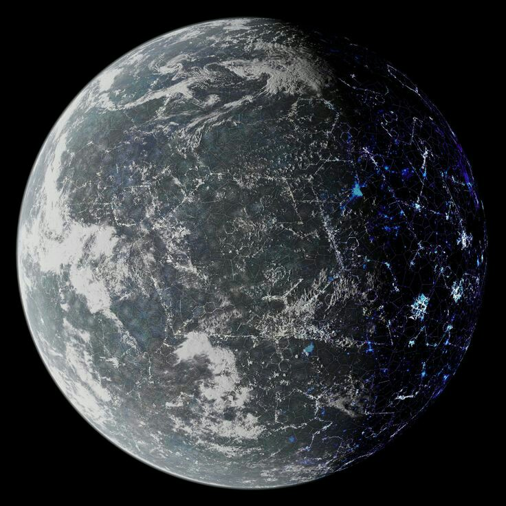

The Future of Space Exploration: Mars Colonization and Beyond
Introduction:
The dream of exploring and colonizing other planets has fascinated humanity for decades. In recent years, space exploration has made significant strides, particularly in the direction of Mars. In this article, we'll delve into the future of space exploration, focusing on the ambitious goal of Mars colonization and what lies beyond our red planetary neighbor.
The Mars Colonization Vision:
For centuries, Mars has captured the imagination of scientists, explorers, and science fiction enthusiasts alike. In recent years, space agencies like NASA, private companies like SpaceX, and international partnerships have been working tirelessly to turn the dream of Mars colonization into reality.
1. New Adversaries:
As the series progresses, the demon slayers will face increasingly powerful and cunning demons. Expect more intense battles and creative strategies to overcome these threats.
2. SpaceX's Starship and Other Projects:
SpaceX, led by entrepreneur Elon Musk, has been at the forefront of Mars colonization efforts. Their ambitious Starship project aims to transport humans to Mars and eventually establish a sustainable colony. SpaceX's vision includes sending the first crewed mission to Mars as early as the 2020s.
3. Challenges and Opportunities:
Mars colonization isn't without its hurdles. The journey itself, the harsh Martian environment, and long-term survival present substantial challenges. However, the potential benefits are equally significant. Mars colonization could serve as a backup for humanity, drive scientific research, and open up opportunities for resource utilization.


Beyond Mars: Interplanetary Exploration:
While Mars is a focal point of current space exploration efforts, it's not the final frontier. The long-term vision includes exploring other celestial bodies, such as the icy moons of Jupiter and Saturn, and even distant exoplanets. Discovering potentially habitable worlds and expanding human presence in space are on the horizon.
Conclusion:
The future of space exploration is filled with promise and challenges. The dream of Mars colonization and interplanetary travel represents humanity's relentless pursuit of knowledge and adventure. While we may be years away from seeing the first humans set foot on Mars, the journey is well underway, and the possibilities are boundless. Space exploration, whether it leads us to Mars or beyond, continues to push the boundaries of what we can achieve as a species.